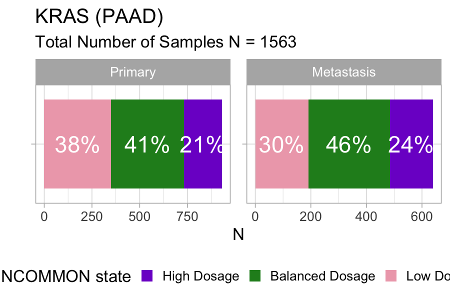

4. Survival analysis of MSK-MetTropism
Source:vignettes/a4_survival_analysis.Rmd
a4_survival_analysis.Rmd
library(INCOMMON)
#> Warning: replacing previous import 'cli::num_ansi_colors' by
#> 'crayon::num_ansi_colors' when loading 'INCOMMON'
library(dplyr)
#>
#> Attaching package: 'dplyr'
#> The following objects are masked from 'package:stats':
#>
#> filter, lag
#> The following objects are masked from 'package:base':
#>
#> intersect, setdiff, setequal, union
library(cli)In this vignette we carry out survival analysis based on INCOMMON classification of samples of pancreatic adenocarcinoma (PAAD) patients from the MSK-MetTropsim cohort.
4.1 Classification of 1740 prostate adenocarcinoma samples
In order to stratify patients based on the INCOMMON interpreted genomes, we first need to classify all the mutations in these samples.
4.1.1 Input intialisation
First we read the example classified data:
data("MSK_PAAD_output")
print(MSK_PAAD_output)
#> ── [ INCOMMON ] 175054 PASS mutations across 24018 samples, with 290 mutant gen
#> ℹ Average sample purity: 0.4
#> ℹ Average sequencing depth: 649
#> # A tibble: 7,839 × 186
#> sample tumor_type purity chr from to ref alt NV DP gene
#> <chr> <chr> <dbl> <chr> <dbl> <dbl> <chr> <chr> <int> <int> <chr>
#> 1 P-0000142 PAAD 0.4 chr12 2.54e7 2.54e7 C C 273 1404 KRAS
#> 2 P-0000142 PAAD 0.4 chr17 7.58e6 7.58e6 G G 53 671 TP53
#> 3 P-0000142 PAAD 0.4 chr2 4.77e7 4.77e7 T T 31 481 MSH2
#> 4 P-0000142 PAAD 0.4 chr5 1.28e6 1.28e6 G G 34 227 TERT
#> 5 P-0000783 PAAD 0.8 chr12 2.54e7 2.54e7 C C 474 941 KRAS
#> 6 P-0000783 PAAD 0.8 chr5 1.12e8 1.12e8 G G 164 424 APC
#> 7 P-0000783 PAAD 0.8 chr11 8.60e7 8.60e7 T T 210 601 EED
#> 8 P-0000783 PAAD 0.8 chr13 3.29e7 3.29e7 TC TC 160 493 BRCA2
#> 9 P-0000879 PAAD 0.6 chr7 1.40e8 1.40e8 A A 308 736 BRAF
#> 10 P-0000879 PAAD 0.6 chr1 1.15e8 1.15e8 T T 188 506 NRAS
#> # ℹ 7,829 more rows
#> # ℹ 175 more variables: HGVSp_Short <chr>, Entrez_Gene_Id <dbl>, Center <chr>,
#> # NCBI_Build <chr>, Chromosome <chr>, Strand <chr>, Consequence <chr>,
#> # Variant_Classification <chr>, Variant_Type <chr>, Tumor_Seq_Allele2 <chr>,
#> # dbSNP_RS <chr>, dbSNP_Val_Status <lgl>, Matched_Norm_Sample_Barcode <lgl>,
#> # Match_Norm_Seq_Allele1 <lgl>, Match_Norm_Seq_Allele2 <lgl>,
#> # Tumor_Validation_Allele1 <lgl>, Tumor_Validation_Allele2 <lgl>, …4.2 Survival analysis of Mutant KRAS patients
In order to obtain a grouping of patients based on the mutant dosage of KRAS, we need first to annotate the FAM and mutant dosage class of each sample and interpret mutant KRAS genomes.
4.2.1 Mutand Dosage Classification
We use the function mutant_dosage_classification to add
INCOMMON classes (Mutant with/without LOH, Mutant with/without AMP,
Tier-2) class and annotate each sample with a
genotype summarising all the interpreted mutations found in
the sample.
MSK_PAAD_output = mutant_dosage_classification(MSK_PAAD_output)
#> Joining with `by = join_by(id)`We investigate the impact on survival of the Mutant KRAS dosage with respect to KRAS WT patients.
We first look at the distribution of mutant dosage across PAAD
samples for KRAS, using function plot_class_fraction:
plot_class_fraction(x = MSK_PAAD_output, tumor_type = 'PAAD', gene = 'KRAS')
Across 1563 samples, a relatively large fraction of KRAS mutations (21%) is associated with high dosage in primary pancreatic tumours, and the fraction increases to 24% in metastases.
4.2.2 Kaplan-Meier survival esitmates
Next we use function kaplan_meier_fit to fit survival
data (overall survival status versus overall survival months in this
case) using the Kaplan-Meier estimator. Notice that we must choose the
variables from clinical_data to be used as survival time
and survival status (‘OS_MONTHS’ and ‘OS_STATUS’ in this case).
MSK_PAAD_output = kaplan_meier_fit(
x = MSK_PAAD_output,
tumor_type = 'PAAD',
gene = 'KRAS',
survival_time = 'OS_MONTHS',
survival_status = 'OS_STATUS')
#> Call: survfit(formula = "survival::Surv(OS_MONTHS, OS_STATUS) ~ group",
#> data = data)
#>
#> 7 observations deleted due to missingness
#> n events median 0.95LCL 0.95UCL
#> WT 214 92 38.3 28.98 51.1
#> Low Dosage 541 344 17.4 15.34 19.8
#> Balanced Dosage 670 417 14.6 13.34 15.8
#> High Dosage 347 237 10.7 9.36 12.5The median overall survival time decreases proportionally to the mutant KRAS dosage: from 38.3 months for the WT group to 17.4 months for low mutant dosage, 14.6 months for the balanced mutant dosage, down to 10.7 months for the high mutant dosage.
4.2.3 Hazard Ratio estimates with Cox regression
In order to estimate the hazard ratio associated with these groups,
we fit the same survival data, this time using a multivariate Cox
proportional hazards regression model. Here, we overcome the confounding
effect of global mutational and copy-number burden by including the
tumour mutational burden and the fraction of genome altered (FGA)
provided within the clinical data, plus other standard covariates such
as age of patients at sequencing, sex and sample type (primary vs
metastasis). For TMB, best practices require using a value of 10 per
megabase to discriminate patients with high burden from those with low.
We can decide which strategy to use by tuning argument
tmb_method. The default value is “median”, which uses the
median over all samples asthreshold. Here, we set it to “>10” to
stick to the mentioned best practices.
MSK_PAAD_output = cox_fit(x = MSK_PAAD_output,
tumor_type = 'PAAD',
gene = 'KRAS',
survival_time = 'OS_MONTHS',
survival_status = 'OS_STATUS',
covariates = c('AGE_AT_SEQUENCING', 'SEX', 'TMB', 'FGA','SAMPLE_TYPE'),
tmb_method = ">10")
#> [1] "Cox fit with INCOMMON groups:"
#> Call:
#> survival::coxph(formula = formula %>% stats::as.formula(), data = data %>%
#> as.data.frame())
#>
#> coef exp(coef) se(coef) z p
#> groupBalanced Dosage 0.828020 2.288783 0.132845 6.233 4.58e-10
#> groupHigh Dosage 1.161802 3.195687 0.136122 8.535 < 2e-16
#> groupLow Dosage 0.717250 2.048791 0.136201 5.266 1.39e-07
#> AGE_AT_SEQUENCING 0.005402 1.005417 0.002965 1.822 0.06845
#> SEXMale 0.179991 1.197207 0.061022 2.950 0.00318
#> TMB_NONSYNONYMOUS> 10 0.049379 1.050619 0.219603 0.225 0.82209
#> FGA -0.098933 0.905803 0.180039 -0.550 0.58266
#> SAMPLE_TYPEPrimary -0.677310 0.507982 0.064381 -10.520 < 2e-16
#>
#> Likelihood ratio test=226.3 on 8 df, p=< 2.2e-16
#> n= 1768, number of events= 1088
#> (11 observations deleted due to missingness)
#> [1] "Pairwise tests:"
#>
#> Simultaneous Tests for General Linear Hypotheses
#>
#> Fit: survival::coxph(formula = formula %>% stats::as.formula(), data = data %>%
#> as.data.frame())
#>
#> Linear Hypotheses:
#> Estimate Std. Error z value
#> `groupHigh Dosage` - `groupBalanced Dosage` == 0 0.33378 0.08228 4.057
#> `groupLow Dosage` - `groupBalanced Dosage` == 0 -0.11077 0.07341 -1.509
#> Pr(>|z|)
#> `groupHigh Dosage` - `groupBalanced Dosage` == 0 9.93e-05 ***
#> `groupLow Dosage` - `groupBalanced Dosage` == 0 0.234
#> ---
#> Signif. codes: 0 '***' 0.001 '**' 0.01 '*' 0.05 '.' 0.1 ' ' 1
#> (Adjusted p values reported -- single-step method)This analysis confirms the gradient of worsening survival outcome of patients with increasing mutant dosage of KRAS. The evaluated hazard ratios increase from 2.04 for Low Dosage, to 2.29 for Balanced Dosage, up to 3.20 for High Dosage. The pairwise analysis reveals that the outcome difference between High and Balanced dosage is significant (P-value ), confirming the effectiveness of mutant dosage as an outcome predictive factor for overall survival.
4.2.4 Visualising survival analysis
Kaplan-Meier estimation and multivariate Cox regression can be
visualized straightforwardly using the
plot_survival_analysis function:
plot_survival_analysis(x = MSK_PAAD_output,
tumor_type = 'PAAD',
gene = 'KRAS')
#> Scale for x is already present.
#> Adding another scale for x, which will replace the existing scale.
#> Scale for x is already present.
#> Adding another scale for x, which will replace the existing scale.
#> Joining with `by = join_by(var)`
#> Joining with `by = join_by(var)`
#> Warning: Removed 3 rows containing missing values or values outside the scale range
#> (`geom_rect()`).
#> Warning: Removed 3 rows containing missing values or values outside the scale range
#> (`geom_point()`).
#> Warning: Removed 1 row containing missing values or values outside the scale range
#> (`geom_rect()`).
#> Warning: Removed 1 row containing missing values or values outside the scale range
#> (`geom_point()`).The plot displays Kaplan-Meier survival curves and risk table, and a forest plot for Cox multivariate regression coefficients, highlighting in red the covariates that have a statistically significant contribution to differences in hazard risks.